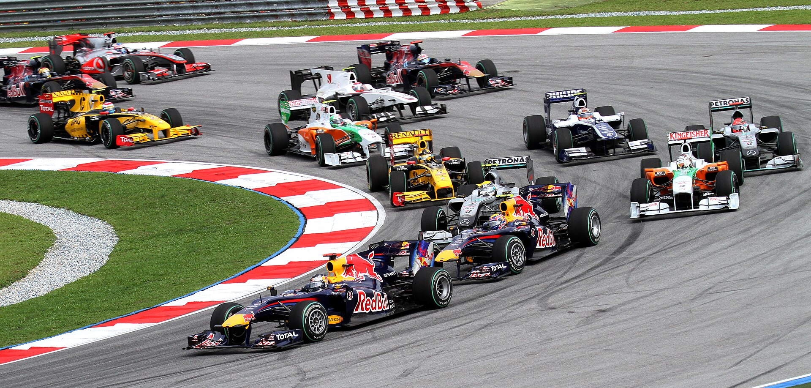

Formula One races are held on Grade One tracks, the highest grade-rating issued by the FIA for tracks. Under the current regulations, circuit layouts and lap distances may vary considerably, provided that each Grand Prix covers a total race distance of 305 km (190 mi). While most tracks are made to be run in a clockwise direction, there are a handful of tracks in the Championship that are to be run anticlockwise.
A typical circuit features a stretch of straight road on which the starting grid is situated, with the pit lane normally located right next to it. The pit lane is home to each team's garage, where cars are stored and serviced before a race. During a pit stop, drivers enter the pit lane to change their tyres, receive repairs or aerodynamic adjustments from their pit crew, or retire from the race (if the car is in a condition to do so). Prior to the 2010 season, pit stops also facilitated mid-race refuelling of the cars. Special pit roads and track markings help to make sure drivers pit and rejoin the track safely
As of 2025, most of the circuits are specially constructed for competition, but the calendar also features several circuits that use converted public streets to varying degrees. These tracks include Monaco, Melbourne, Singapore, Baku, Miami, Jeddah, and Las Vegas. Three-time World champion Nelson Piquet famously described racing in Monaco as "like riding a bicycle around your living room
Circuit design to protect the safety of drivers is becoming increasingly sophisticated. Several of the new circuits in F1, especially those designed by Hermann Tilke, however, have also been criticised as lacking the "flow" of such classics as Spa-Francorchamps and Imola. His redesign of the Hockenheim circuit in Germany, for example, while providing more capacity for grandstands and eliminating extremely long and dangerous straights, has been frowned upon by many who argue that part of the character of the Hockenheim circuit was the long and blinding straights into dark forest sections
The Circuit of the Americas in Austin, the Sochi Autodrom in Sochi, and the Baku City Circuit in Azerbaijan have all been introduced as brand new tracks since 2012. In 2020, Algarve International Circuit debuted on the F1 calendar as the venue of the Portuguese Grand Prix, with that country having last hosted a race in 1996; Formula One announced its return to Portimão for the 2027 and 2028 seasons.[238] In 2021, Circuit Zandvoort returned to the F1 calendar as the Dutch Grand Prix, having last hosted a race in 1985.

Learn more about Formula 1 circuits